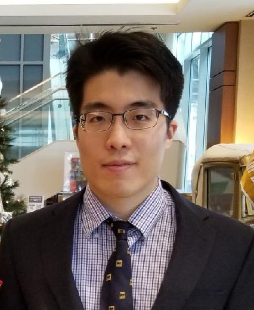

About Me

Full Stack
RESTful API development
React
Redux
Node.js
MongoDB
MySQL
jQuery
JavaScript
CSS
SASS
Bootstrap
Git
AJAX
JSON Web Token
Bio
Ki graduated with B.S. in Bioengineering with minor in Computer Science from the University of Maryland at College Park on May 2017.
After receiving B.S. degree, Ki had been working on Ph.D. in Bioengineering at Clemson University.
However, Ki realized that his true passion was in programming and decided to pursue true dream.
After deciding to leave graduate school, Ki has been studying web development and has completed a full stack web development program at the Georgia Tech Web development Bootcamp on Dec. 2018.
Ki is currently looking for a web developer position.